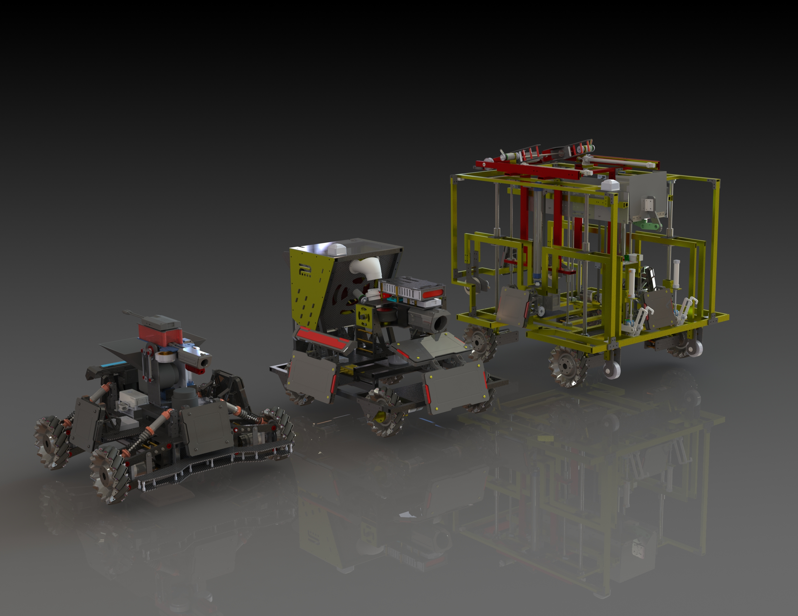

The mechanical team is the backbone of our club. With over 30 members, mechanical team design, prototype and manufacture all robots. Using Solidworks, members design all mechanical parts and combine electrical parts into digital assembly that provide a platform for all other teams to perform their magic. Our ultimate goal is for members to design for manufacturing. As we utilize different manufacturing methods including 3D printing, CNC milling, Water-jet cutting, members not only gain knowledge on how to operate the machines outside of classroom, but also improve their ability to designing CAD and prepare themselves to become better engineers.
Members will also learn to design an efficient manufacturing process and perform basic failure mode analysis to prevent potential hazards and malfunctions.
There are 7 different kinds of robots in total in RoboMaster University Championship (RMUC). They are Standard, Hero, Engineer, Sentry, Aerial, Dart System and Radar. However, the North America region is only hosing RoboMaster University League (RMUL) competition, which includes 3V3 Confrontation and Standard Confrontation.
In the “3V3 Confrontation”, participating teams need to independently develop Standard, Hero and Sentry to participate in tactical battles in the designated battlefield and participate in tactical battles in the designated battlefield. Participants control their robots to attack enemy’s robots and Base by launching projectiles. At the end of the match, the team with the highest remaining Base HP wins.
In the “Standard Confrontation”, Standards from each team (1V1) fight against each other by shooting the Armor Modules. At the end of the match, the team with the highest remaining Standard HP wins.

Also named as Infantry Robot, launching 17mm projectiles and acting as the major output unit at the battlefield. Three Standards are allowed to present in RMUC, and two Standards are allowed to present in 3v3 of RMUL
Launching 42mm projectiles at the opponents to cause a larger amount of damage. One Hero robot is allowed in 3v3 of RMUL
Engineer Scrambles for resources and resurrects teammates
Fully automatic and moving along the Sentry rail to defend the base. One Sentry is allowed in 3v3 of RMUL
Providing air support and a bird view for the entire team
Launching Darts to attack enemy’s Output and Base
Equipped with the most excellent computing power to provide vision and warning information to the entire team